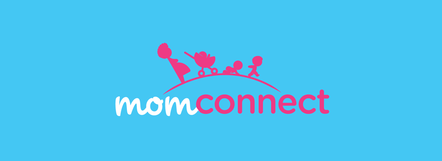

Praekelt Mobile Technology Powers Groundbreaking South African Department of Health Maternal Health Service

August 21, 2014 - Praekelt Foundation is one of the key technology partners in MomConnect, a groundbreaking Department of Health (DoH) mHealth initiative.
Praekelt Foundation, together with Jembi Health Systems, provided the project architecture and process flow for the nationwide programme designed to improve the quality of care for pregnant women and their infants.
Launched by the Minister of Health, Dr. Aaron Motsoaledi, on August 21st in Soshanguve outside Pretoria, MomConnect incorporates three key elements: a pregnancy registry, stage-based messaging and a helpdesk for mothers.
The USSD-based registration system being used in the MomConnect project runs on Praekelt Foundation’s open source, cloud-based platform, Vumi. The platform connects with all four South African mobile operators, ensuring that registered pregnant women receive stage-based, culturally sensitive SMSs in their language of choice. The programme is modelled on world-leaders in maternal health content, BabyCenter’s methodology of delivering personalised, culturally sensitive, stage- based content at the right time of pregnancy – and, after birth, during the first year of their child’s life.
The MomConnect Help Desk allows pregnant women and new mothers the ability to rate the service they received at public health facilities in South Africa. It also allows women to send a question, compliment or complaint and to search through USSD-based life guides with key snippets of information about pregnancy, delivery, HIV, feeding and much more.
For the August 21st launch, MomConnect will allow pregnant South Africans to sign up for SMSs in any one of six languages (English, Afrikaans, Zulu, Xhosa, Sotho and seTswana) with all 11 official languages expected to be available soon. The built-in flexibility of Vumi also means that users can re-register with a new mobile number should they need to and that they can opt-out from MomConnect should they miscarry or lose their baby. As part of MomConnect’s focus on data capturing for optimum planning by the Department of Health, a survey will capture a user’s reasons for leaving the programme.
“We are really proud to be part of this nationwide programme that has the potential to impact the Millennium Development Goals and the Post 2015 agenda of reducing child mortality and improving maternal health,” says Praekelt Group’s CEO, Gustav Praekelt.
“It has been gratifying to build on the work that we have been doing with MAMA over the past three years, in this important private-public partnership with the National Department of Health,” adds Praekelt. “Praekelt Foundation’s vision is built on using mobile technology to improve the lives of those living in the majority world – and MomConnect is a manifestation of this.”
With support from Johnson & Johnson and USAID, Praekelt Foundation (the country partner for MAMA) has played an important role in the creation of MomConnect. Since it launched in South Africa in 2012, Praekelt Foundation has provided the platform for MAMA South Africa – and, working together with the Wits Reproductive Health and HIV Institute and BabyCenter, has helped to create and deliver twice-weekly tailored messages for pregnant women, based on where they are in their pregnancy or their child’s age. These have now been combined with the National Department of Health’s messages to form the resource that MomConnect will draw on when communicating with pregnant women and mothers of infants.
MAMA South Africa will play a complementary role to MomConnect with an increased focus on interactive, community platforms, such as the MAMA mobi site (askmama.mobi); the MAMA Mxit platform and the MAMA Quiz Platform. “More than 90% of MAMA South Africa’s 450 000 users engage with these channels, which additionally allow for users to interact with a community of pregnant women and moms of infants,” explains Praekelt. “We are thrilled that the MAMA SMS model was able to be scaled up and migrated into MomConnect and Praekelt Foundation will continue to work with our MAMA partners on our other platforms to play our part in reaching Millennium Development Goals 4 and 5.”
Praekelt Foundation’s technology works together with Jembi Health Systems, which houses the official pregnancy registration information at the National Department of Health. MomConnect’s use of the Vumi platform means that the programme has the potential to reach every single mom in South Africa. Without relying on smartphone technology or internet-enabled devices, USSD is a technology that works on every phone in the country. In addition, the reverse-billing being contributed by the four major mobile service providers (MTN, Vodacom, Cell C and Telkom Mobile), together with additional funding from Johnson & Johnson, means that all registered MomConnect users will receive stage-based messages via SMS for free.
Alongside its role as MomConnect technical implementing partner, Praekelt Foundation’s design studio created all the marketing and training material for the programme, including posters, flyers, and the opt-in booklet (available at launch, in three languages).
“MomConnect is really a life-changing programme that’s based on the most ubiquitous piece of technology in Africa: the mobile phone,” concludes Praekelt.
MAMA Global Funders & Partners


MAMA SA Funders & Partners